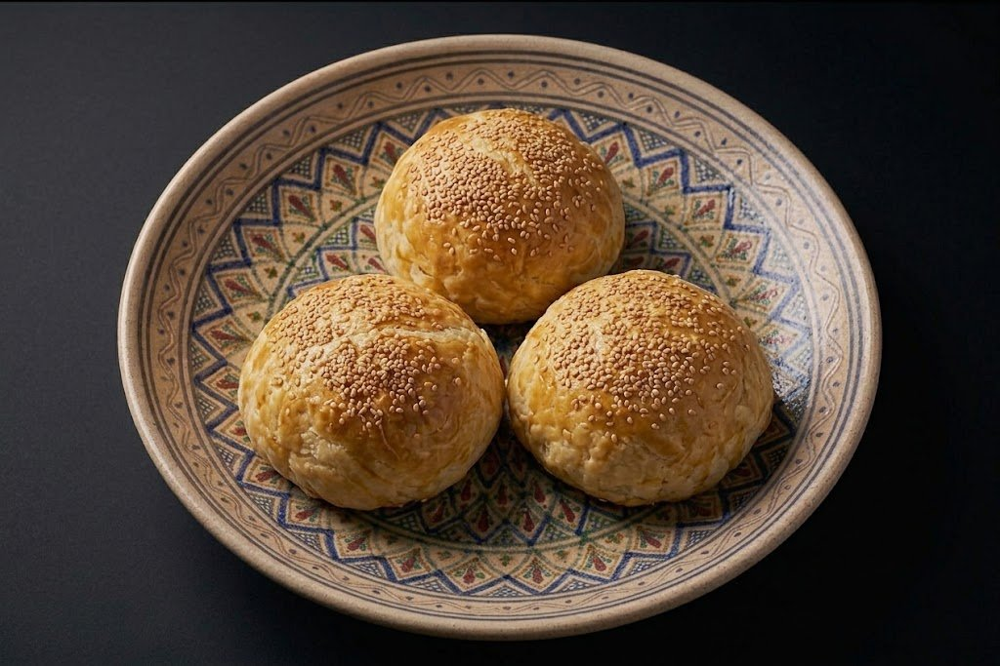
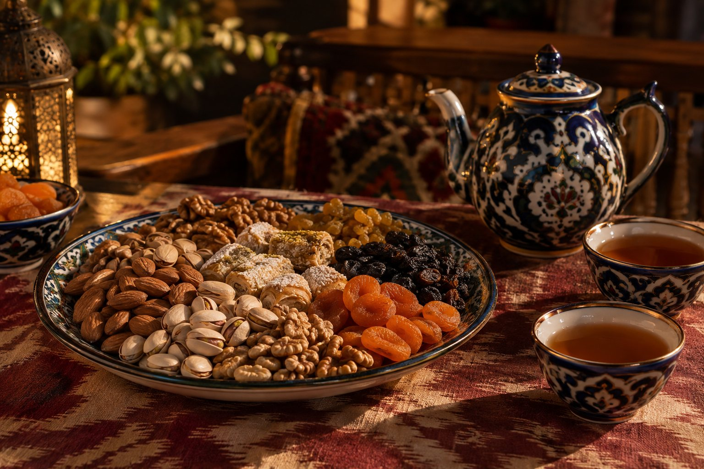
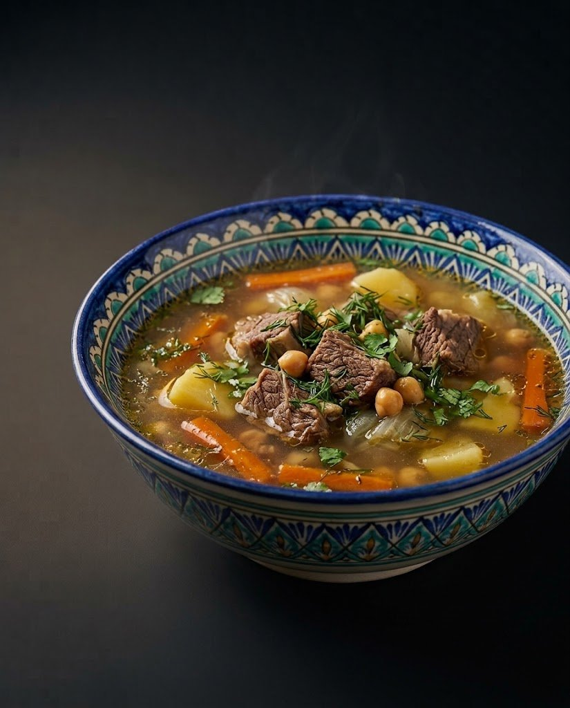
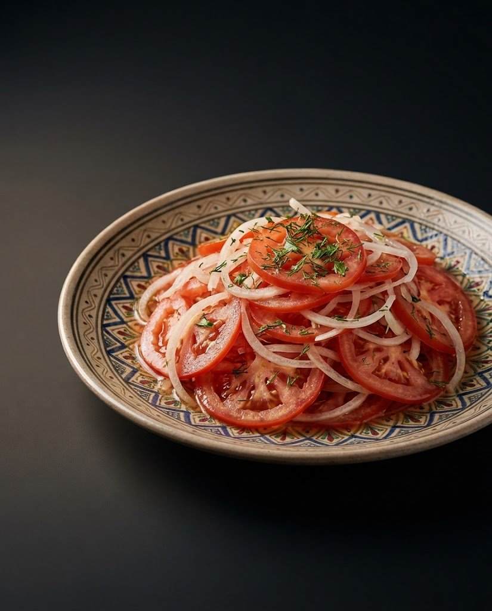
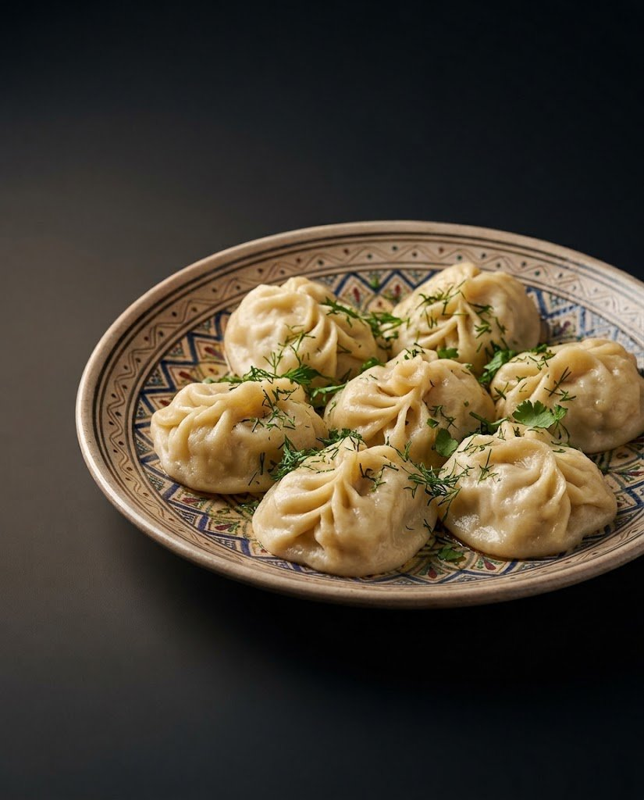
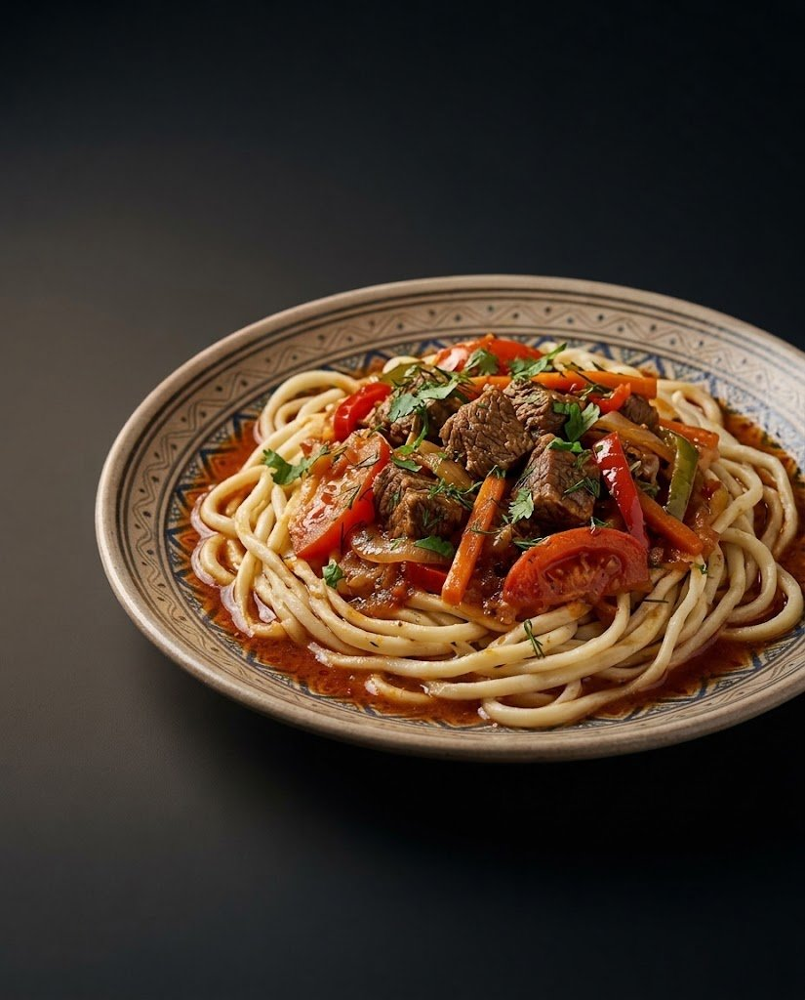
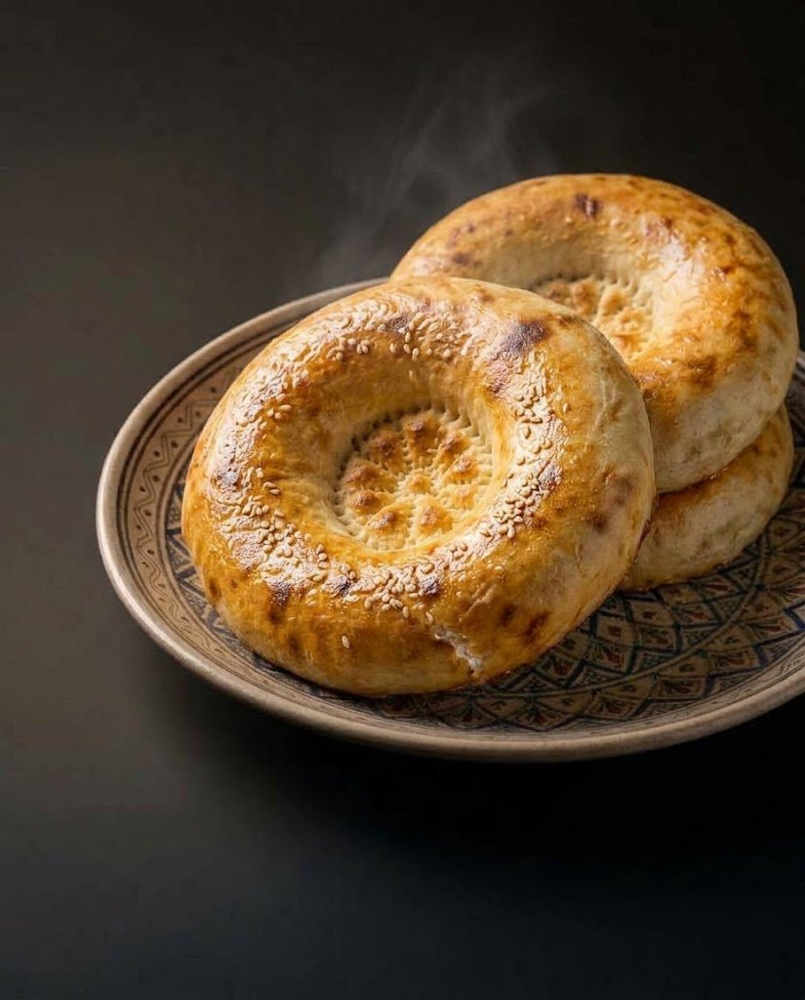

Здесь будет короткий рассказ о «Дилхуш»: кто открыл ресторан, с чего всё началось и что здесь любят гости. 3–4 живых предложения — напишем вместе с владельцем.

Меню
Что сегодня на дастархане
Блюда, описания и цены ниже — заглушки. Настоящее меню добавим из меню ресторана.
Стоит попробовать
Три блюда, которые хочется показать первыми. Выберем вместе с владельцем.
Всё меню
Цены — в сумах. Условия обслуживания — уточнить

Атмосфера
Садитесьпоудобнее
Зал, кухня, гости
Здесь будут настоящие фотографии «Дилхуш». Под каждый кадр уже подобран формат — останется заменить файлы.


Фото зала
после фотосъёмки · 4:5


Кухня и команда
после фотосъёмки · 4:5
За столом
Как принятоза дастарханом

01
Сначала — чай и лепёшка
Застолье начинается не с меню, а с чайника и горячего нона. Лепёшку не режут — её ломают руками и делят на всех.
02
Потом — главное блюдо
Горячее ставят в центр стола, и каждый берёт сам. Так едят в узбекских семьях — вместе, из общего блюда.
03
И никто не торопится
За дастарханом сидят долго: подливают чай, пробуют ещё что-нибудь и говорят обо всём на свете.
Текст-заглушка
Есть ли у «Дилхуш» свои традиции — особая подача, блюдо дня, чай в конце? Расскажем о них здесь после разговора с владельцем.
Контакты
Как нас найти
Открыты каждый день с 09:00 до 22:00.
Адрес
Гулистан
Сырдарьинская область · код места на карте GQ3F+4VP